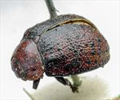
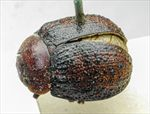
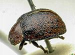

Click on images to enlarge
{kind=link}

Paropsis ruficollis type specimen, oblique view
{kind=link}

Paropsis ruficollis type specimen, dorsal view
{kind=link}

Paropsis ruficollis type specimen, lateral view
Name
Trachymela ruficollis (Blackburn, 1896)
Type specimen
Location: BMNH
Label data: “Type” (red-bordered circle), “6166 N.S.W. T”, “Blackburn coll. 1910-236.”, “Paropsis ruficollis Blackb.”
Male; Size: 7.3 x ? x 3.35 mm; A-A: 1.15 mm; HCE/BL: 18.25% (obtained by measurement from lateral view in photo).
Head and pronotum brown (though margins and rear of head show some darkening); elytra brown with black lateral margins, black verrucae scattered fairly densely and mostly randomly over surface, with a lateral coalescence of some behind anterio-median depression, the area around scutellum is mostly black; ventrally, dark brown with darker patches.
Original description
[Original description shown in figure, translated from Latin using ChatGPT]
Oval, moderately broad and convex; greatest height (seen from the side) about the middle (or slightly before) of the elytral margin; fairly shining; pitchy; head, pronotum, bases of antennae, scutellum, elytra (their verrucae on the anterior sutural region and apical margin pitchy), and parts of the underside and legs reddish. Head rather densely but more finely, scarcely roughened, punctured. Prothorax broader than long in the ratio 2 3/8 : 1, widened from the apex to well beyond the middle, with a distinct transverse impression behind the anterior margin; punctation somewhat less strong and fairly dense (coarser laterally); sides moderately rounded, not flattened; posterior angles almost absent. Scutellum coriaceous or almost smooth. Elytra distinctly depressed beneath the humeral callus; base transversely impressed; densely but less strongly punctured in somewhat regular rows (more strongly at the sides); verrucae fairly numerous and arranged in rows; interstices slightly rugulose; marginal area fairly broad and distinctly separated; humeral callus inner margin much farther from the lateral margin than from the suture. Basal ventral segment finely and sparsely punctured.
Female slightly more convex than male, with somewhat shorter antennae.
Length 3⅗ lines (8.1 mm), width 2 2/5 lines (5.4 mm).
Notes
Blackburn (1896) deals with T. ruficollis as part of his subgroup ii (i.e., those species without "strongly marked characters", whose greatest height is not or scarcely in front of the middle of the elytral margin and whose elytra are depressed under the humeral callus). Within that group, he characterises it as:
(1) inner edge of humeral callus distinctly nearer to lateral margin of elytra than to suture;
(2) sides of prothorax not at all explanate;
(3) elytra not having a well defined transverse wheal-like ridge;
(4) form not nearly circular, with elytra not wider than long;
(5) prothorax with somewhat evenly rounded sides; only moderately narrower in front than at base;
(6) puncturation of elytra not particularly fine and close;
(7) disc of prothorax closely and evenly punctulate;
(8) prothorax at its widest markedly behind the middle;
Blackburn indicates that the uniform red colouring of head and prothorax distinguish this species from its close relatives.
References
Blackburn, T. 1896, "Revision of the genus Paropsis. Part I", Proceedings of the Linnean Society of New South Wales, vol. 21, no. 4, 637-693 (page 668).
Copyright © 2026. All rights reserved.